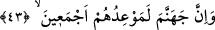
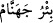

haklarında: “Benim hâlis kullarıma karşı senin bir hâkimiyetin yoktur.” buyurduğu
kimseler bunlardır. Yeryüzünde kibir ve azâmetle yürüyen câhil ve fâsık âlimler ise
kendileriyle hakîkî âlimler muhâtap olduğu zaman iğrenç, kınayıcı ve çirkin sözler sarf
ederler. Allah’ın haklarında: ‘ancak sana uyan azgınlar hâriç’ buyurduğu kimseler de
bu âlimlerdir. Öyleyse ey akıl sâhibi olanlar, habislerin meylettiği habis ilimden
sakının. Çünkü “Kötü kadınlar kötü erkeklere, kötü erkekler ise kötü kadınlara
yaraşır.” (en-Nûr, 24/26)
Ey kalb sâhipleri, tertemiz kişilerin yöneldiği ilmin peşinden koşun. Çünkü “temiz
kadınlar temiz erkeklere, temiz erkekler de temiz kadınlara yaraşır.” (en-Nûr,
24/26) Doğru yolda olan, hidâyete erdirilmiş kişiler bunlardır. Umulur ki böylece
faydalı ilim ve sâlih amel sâyesinde hem dünyâda hem de âhirette kurtuluşa erersiniz.
Faydalı ilimlerin en faydalısı ise ilâhî tecellîden, rahmânî feyizden ve ilâhî kitâb ile
nebevî sünnetin te’yid ettiği rabbânî ilhamdan hâsıl olan ilâhî ilimdir.
Bu tecellî, feyz ve ilhamla berâber olan bu ilim ise ancak şerîat ile tabîatı ıslâh
edince, tarîkat ile nefsi tezkiye edince, ma‘rifet ile kalbi tahliye edip gönlü bezeyince,
hakîkat ile rûhu parlatıp sırrı tasfiye edince hâsıl olur. Bu sayılanlar ise en kâmil tevhîd,
en şümûllü tecrîd ve Allah dışındaki tüm varlıklarından (mâsivâ) en güzel tefrîd ile
mümkün olur. Öyle ki taleb, yönelme (kasd), teveccüh ve muhabbette O’nun dışında
süflî ve fânî varlıklardan hiçbiri kalmaz. Şu halde Allah dışındaki bütün varlıklardan
“Allah’a kaçın.” (ez-Zâriyât, 51/50) “Müferridler öne geçti”[74] “(Hayırda) önde
olanlar, (ecirde de) öndedirler. İşte bunlar, (Allah’a) en yakın olanlardır.” (el-Vâkıa,
56/10-11)” Hz. Şeyh’in el-Lâihâtü’l-berkıyyât’taki sözü burada bitti.
Câmî der ki:
Sûret âleminde her ne varsa nakş ve hayâldir.
Yolu hakîkat tarafına iletmezsen hayâlden ne hâsıl olur?!
43. Muhakkak cehennem, onların hepsine vaadolunan yerdir.
“Muhakkak cehennem, onların hepsine vadolunan yerdir.” Şeytana tâbî olanların
hepsinin buluşma yeri; yâni varacakları yerdir. Cehennem kelimesi, Farsça asıllı,
arapçalaştırılmış bir kelimedir. “
Rakiyyetün cehennâm” denir. ‘Dibi uzak kuyu’
demektir. Sanki Farsça aslı “Çehnem” gibidir. Fenârî’nin Tefsîru’l-Fatiha adlı
eserinde şöyle denir: “Cehenneme bu adın verilmesi, dibinin uzaklığından dolayıdır.
Kuyunun dibi uzaksa “
Bi’run cehennâm” denir. Cehennemin derinliği, yüz
yetmiş beş senelik mesâfedir. Cehennem yaratılmış varlıkların en büyüğü olup Allah’ın